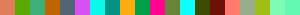

Usage Guide¶
Installation¶
To use painto, first install it using pip:
(.venv) $ pip install painto
Using Colors¶
Welcome to the world of 🎨painto colors!
With painto, working with colors in Python is simple and fun. You can use painto’s color objects just like you would use regular color values in libraries such as pillow, pygame, and more, with no conversion or extra steps needed. Whether you’re drawing images, filling surfaces, or setting text colors, just pass a painto color directly and it will work seamlessly.
For example, you can do things like:
import painto
from PIL import Image
img = Image.new("RGB", (100, 100), painto.red)
Or with pygame:
import painto
import pygame
screen.fill(painto.blue)
No matter what system you’re using, painto colors are ready to go.
But why use painto at all instead of just using native color values?
Using 🎨painto instead of native color values gives you a lot more flexibility and power: you can easily convert between color formats (hex, RGB, HSL, etc.), access color names, generate random or sorted color palettes, adjust brightness or hue, and even print colored text to the terminal, with a simple API. Read on for all the things 🎨painto can do.
Color Properties¶
With 🎨painto, every color is basically a little data-packed rainbow.
Here’s a quick tour of the cool stuff you can get from any 🎨painto Color:
.hexThe classic hex code, like#FF0000 for red. Great for web stuff,
impressing your designer friends, or just looking fancy.
for red. Great for web stuff,
impressing your designer friends, or just looking fancy..rgbThe RGB tuple, e.g.,(255, 0, 0). Perfect for pillow, pygame, or any time you want it to look really python-y..rgbaJust likeColor.rgb, but with an alpha channel for transparency..hsvThe HSV (Hue, Saturation, Value)tuple. Sometimes dealing with RGB can be a hassle to get exactly what you want. These can also be accessed as.h,.s, and.v..nameThe best-guess name for the color, likered, blue , or even
, or even babypukegreen. If painto doesn’t have a name, this will return the.hexvalue, though there’s a flag you can set to look up unknown names, too. See New Color Names..webThe CSS string for the color, so you can put it straight into your web projects..luminosityHow bright is thisColor, really? Get a number from 0 (dark, well, black at that point) to 1 (bright)..grayscaleThe grayscaleColorof the original. This is the color that is the same brightness as the original color, but with no color information.
Note
The .grayscale and
.luminosity are calculated using the WCAG reference formula
from https://www.w3.org/WAI/GL/wiki/Relative_luminance .
And that’s just the start! Every 🎨painto Color is like a Swiss Army knife for colors.
Keep reading for all of the other things that you can do.
- Example:
import painto c = painto.green print(c.hex) # '#00FF00' print(c.rgb) # (0, 255, 0) print(c.hsl) # (120, 100, 50) print(c.name) # 'lime' print(c.luminance) # 0.7152 print(c.console("Look, I'm green! (or at least lime)"))
Look, I'm green! (or at least lime)
Changing Colors: Mix, Match, and Tweak!¶
Colors in 🎨painto aren’t just static, you can blend, lighten, darken, and otherwise transform colors with simple methods and operators.
Mixing Colors
Want to blend two colors together? Just use the + operator:
purple = painto.red + painto.blue print(purple.hex)
#7F007F

Lightening and Darkening
Need a lighter tint or darker shade? You can multiply or divide the Color by
a factor:
red = painto.red blue = painto.blue darker_red = red / 2 lighter_blue = blue * 2 print(red.hex) print(darker_red.hex) print(blue.hex) print(lighter_blue.hex)
#FF0000
#7F0000
#0000FF
#7F7FFF
Invert: Get the opposite Color with the - operator:
blue = painto.blue opposite_blue = -blue # yellow print(blue.hex) print(opposite_blue.hex)
#0000FF
#FFFF00
The Terminal¶
You can print colored text or backgrounds in your terminal using Color objects.
Each color provides methods for generating ANSI escape codes for foreground and background colors.
Printing to the terminal usually involves three or four things: an ANSI escape sequence for the color of the text, another ANSI escape for the background (if using), then the text you want printed, then the ANSI reset sequence to get back to normal so the colors don’t follow you onto future text.
🎨painto can help with this by building you the ANSI sequences for any color.
- Foreground Color:
-
red = painto.red print(red.ansi_escape)
\033[38;2;255;0;0m - Background Color:
-
red = painto.red print(red.ansi_escape_bg)
\033[48;2;255;0;0m - Reset:
-
print(painto.ansi_reset) # The reset is the same for all colors.
\033[0m
By themselves the can be a bit unweidly but still useful if you’re doing complicated things.
- Example:
Print colored text and backgrounds
red = painto.red blue = painto.blue print(red.ansi_escape + "Red text" + painto.ansi_reset) print(blue.ansi_escape_bg + red.ansi_escape + "Blue background, red text" + painto.ansi_reset)
Red textBlue background, red text
But there’s an easier way than that, right?
Yep! If you’re just wanting to print a string without too much fuss, there are easier methods avaiable.
There are two methods that wrap all of the escape work up for you, .console(str)
and .console_bg(str).
The first will wrap the text with the Color as the foreground text color. The second will use the
Color as the background color and choose a text color (either white or black) that contrasts well with the backgorund.
- Example:
violet = painto.violet yellow = painto.yellow print(violet.console("Violet text")) print(yellow.console_bg("Yellow background")) # will choose black text
Violet textYellow background
Using .console_bg(str) is particularly handy (if you want
colored background) since the text color is also picked up automatically. Both functions also add
the ANSI reset code to the end of the returned string.
Colors with other libraries¶
You can use painto’s Color objects directly with many popular
Python graphics libraries, since they accept RGB(A) tuples or hex strings.
Pillow (PIL)¶
- Example:
from PIL import Image, ImageDraw import painto img = Image.new("RGB", (100, 100), painto.sky_blue) draw = ImageDraw.Draw(img) draw.rectangle([10, 10, 90, 90], fill=painto.red) img.show()
Pygame¶
- Example:
import pygame import painto pygame.init() screen = pygame.display.set_mode((200, 200)) screen.fill(painto.green) pygame.draw.circle(screen, painto.orange, (100, 100), 50) pygame.display.flip() pygame.time.wait(1000)
Tkinter¶
- Example:
import tkinter as tk import painto root = tk.Tk() canvas = tk.Canvas(root, width=200, height=200) canvas.pack() # Tkinter expects hex strings for colors canvas.create_rectangle(50, 50, 150, 150, fill=painto.blue.hex) root.mainloop()
New Color Names¶
Normally, colors will only return a true name from .name if it
has a name from one of the built-in color lists. However, if you want to look up a color name
you can do that by enabling dynamic name lookup. This will use the color.pizza API to look up
a name for any RGB color. To do this, there are two helped functions to enable and disable dynamic
name lookup: enable_dynamic_name_lookup() and
disable_dynamic_name_lookup().
- Example:
>>> new_color = painto.Color("#946A87") >>> print(new_color.name)
#946A87
>>> painto.enable_dynamic_name_lookup() >>> print(new_color.name)
Fruit of Passion
Warning
Use this with care. It will slow any access to .name that isn’t known
and cached.
Working With Lists of colors¶
sorting, ranges, etc.
Sorting Colors¶
Colors can be sorted by hue (rainbow) or luminosity (brightness). The default is luminosity.
- Sorting by Hue:

- Sorting by Luminosity:

You can change sorting by calling painto.sort_by_hue() or painto.sort_by_luminosity(),
and see what the current sorting method is with painto.sorting_by().
- Example:
A random set of colors sorted both ways for comparison.
>>> random_colors = painto.xkcd.random(20)

>>> random_colors = sorted(random_colors) # by luminosity, the default
>>> painto.sort_by_hue() >>> random_colors = sorted(random_colors)
Making Your Own Lists of Colors¶
custom color lists. Adding to the lookup color_lists object.